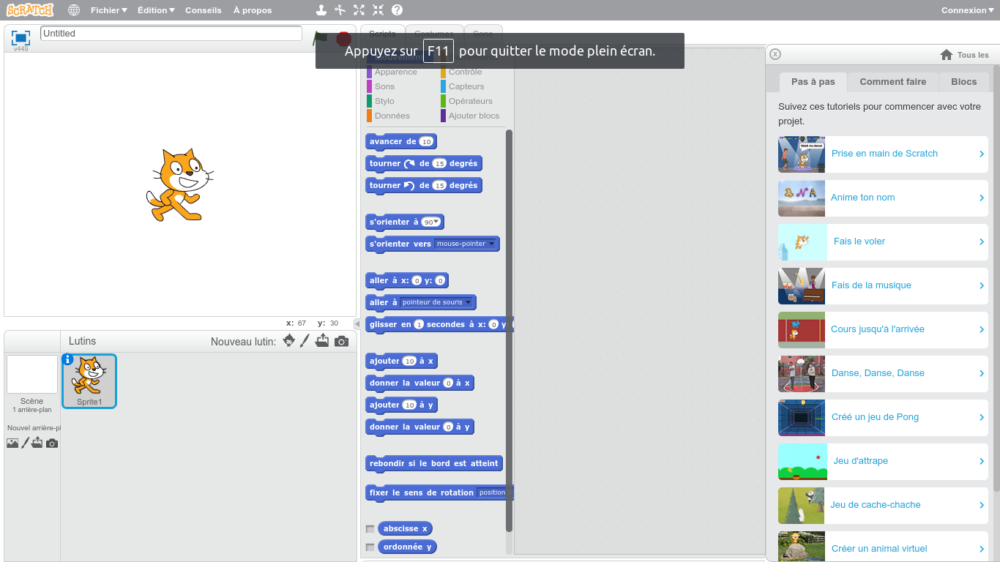

Passez votre souris sur les images. Cliquer au centre pour visiter
Cliquez ici
La possibilité créer un programme en partant de rien, des possibilités importantes de projets ludiques et sérieux en même temps.
Partez en exploration voir les projets réalisés par d'autres personnes et ainsi voir les possibilités que vous offre Scratch.
Un lieu de discussion qui vous permettra d'échanger avec toutes les personnes qui utilisent Scratch.
Un lieu créé pour l'entraide afin d'aider d'autres personnes ou pour poser vos questions si vous avez besoin d'aide.